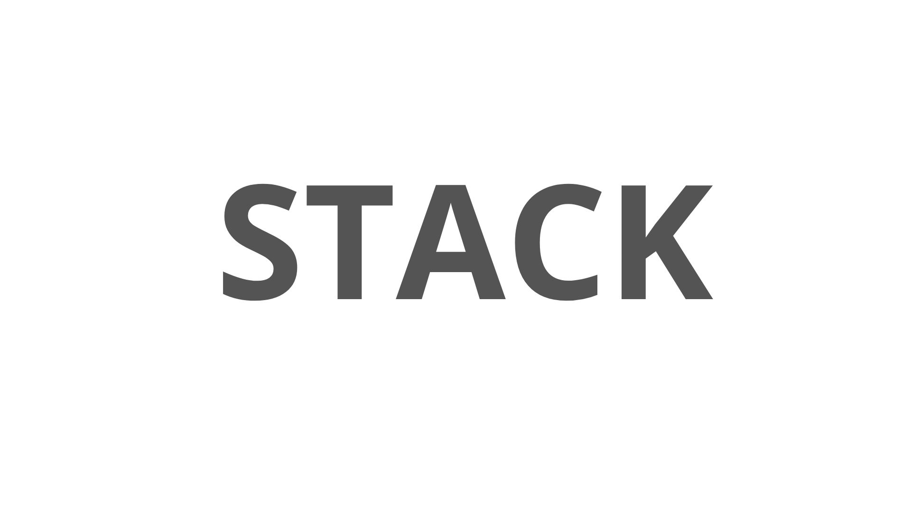
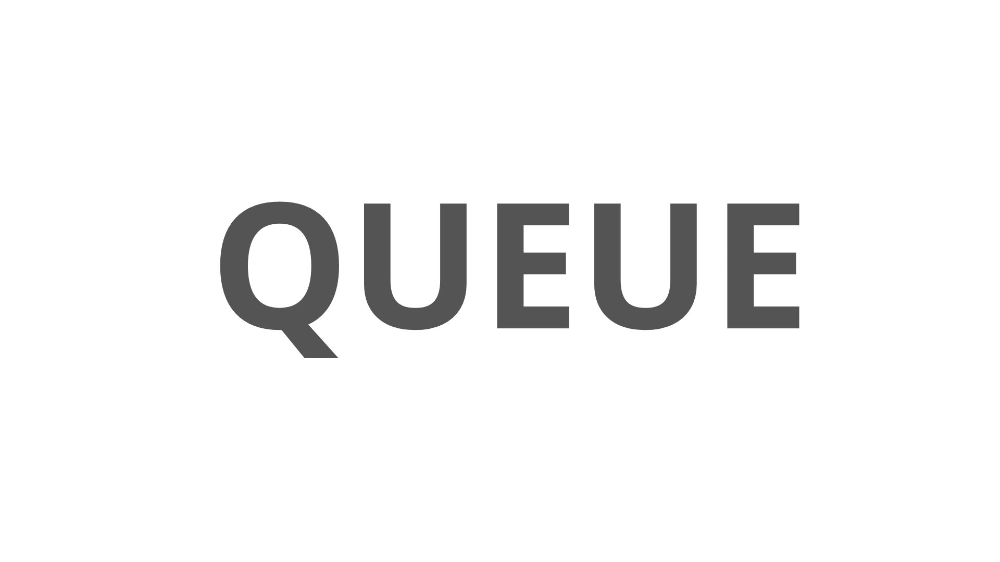

Pengantar — Stack & Queue
Stack dan Queue adalah dua struktur data linear paling fundamental dalam pemrograman. Keduanya menggunakan array sebagai media penyimpanan, namun berbeda dalam cara mengakses datanya.
- Stack (LIFO) → Last In First Out; elemen terakhir masuk adalah yang pertama keluar; insert & delete dari satu ujung (TOP)
- Queue (FIFO) → First In First Out; elemen pertama masuk adalah yang pertama keluar; insert dari REAR, delete dari FRONT
STACK — LIFO:
Push 10 → Push 20 → Push 30
Top ──► [ 30 ]
[ 20 ]
[ 10 ] ← Bottom
Pop → keluar 30 (yang terakhir masuk)
QUEUE — FIFO:
Enqueue 1 → Enqueue 2 → Enqueue 3
FRONT ──► [ 1 ] [ 2 ] [ 3 ] ◄── REAR
Dequeue → keluar 1 (yang pertama masuk)
Apa itu Stack?
Stack adalah struktur data linear yang mengikuti prinsip LIFO (Last
In, First Out).
Bayangkan tumpukan piring — piring yang terakhir diletakkan di atas adalah piring yang
pertama diambil.
Stack hanya dapat diakses dari satu ujung yang disebut TOP.
- Insert (Push) dan Delete (Pop) hanya dari satu ujung: TOP
- Push & Pop: O(1) — sangat efisien
- Peek/Top: O(1) — melihat elemen puncak tanpa menghapus
- Cocok untuk: function call stack, undo/redo, ekspresi matematika, browser back
Video Penjelasan Stack

Visualisasi Interaktif
Gunakan tombol di bawah untuk mencoba operasi Stack secara langsung. Masukkan nilai lalu klik PUSH, atau coba POP, PEEK, dan DISPLAY.
Deklarasi Array & Variabel Global
Stack diimplementasikan menggunakan array global. Variabel top bertindak sebagai
pointer ke elemen puncak stack. Nilai awal top = -1 menandakan stack kosong.
Kode Program
#define MAX 5 // ukuran maksimal stack
int stack[MAX]; // array penampung elemen stack
int top = -1; // pointer puncak; -1 = stack kosongMAX→ kapasitas maksimal stack; ubah sesuai kebutuhanstack[MAX]→ array tempat menyimpan semua elementop = -1→ kondisi awal: stack kosong; setiap push increment top, setiap pop decrement top
Push
Fungsi push() menambahkan elemen baru ke puncak stack. Sebelum menambah, harus
dicek apakah stack sudah penuh (top == MAX - 1). Operasi O(1).
Kode Program
void push(int data) {
if (top == MAX - 1) {
cout << "Stack Overflow! Stack penuh." << endl;
} else {
top++; // naikkan pointer dulu
stack[top] = data; // baru isi data
}
}- Cek
top == MAX - 1→ jika ya: Stack Overflow, tolak top++→ pindahkan pointer ke posisi barustack[top] = data→ simpan data di posisi baru
Visualisasi
push(10): top = -1 → top++ → top=0 → stack[0]=10
push(20): top = 0 → top++ → top=1 → stack[1]=20
push(30): top = 1 → top++ → top=2 → stack[2]=30
State stack:
index: [0]=10 [1]=20 [2]=30
↑ top=2
Pop
Fungsi pop() menghapus elemen dari puncak stack. Harus dicek apakah stack kosong
(top == -1) sebelum pop. Operasi O(1).
Kode Program
void pop() {
if (top == -1) {
cout << "Stack Underflow! Stack kosong." << endl;
} else {
cout << "Elemen keluar: " << stack[top] << endl;
top--; // turunkan pointer; data lama "terhapus" secara logis
}
}- Cek
top == -1→ jika ya: Stack Underflow, tolak - Tampilkan
stack[top]→ elemen yang akan dihapus top--→ turunkan pointer; elemen di atas indeks baru dianggap tidak ada
- Nilai lama di array tidak benar-benar dihapus dari memori — hanya
topyang diturunkan - Jika push berikutnya dilakukan, posisi itu akan ditimpa dengan nilai baru
Peek / Top
Fungsi peek() menampilkan elemen puncak stack tanpa
menghapusnya. Berguna untuk melihat nilai top sebelum memutuskan langkah
selanjutnya. Operasi O(1).
Kode Program
void peek() {
if (top == -1) {
cout << "Stack kosong." << endl;
} else {
cout << "Elemen puncak (TOP): " << stack[top] << endl;
}
}- Peek → hanya membaca
stack[top], pointertoptidak berubah - Pop → membaca
stack[top]lalu decrementtop
Display / Tampilan
Fungsi tampilan() menampilkan semua elemen dalam stack dari indeks 0 (bottom)
hingga top. Operasi O(n).
Kode Program
void tampilan() {
if (top == -1) {
cout << "Stack kosong." << endl;
} else {
cout << "Isi stack (bottom → top):" << endl;
for (int i = 0; i <= top; i++) {
cout << stack[i] << " ";
}
cout << endl;
}
}- Loop dari
i = 0sampaii <= top - Elemen pertama (
stack[0]) adalah bottom, elemen terakhir (stack[top]) adalah top - Kompleksitas O(n) — harus iterasi seluruh elemen aktif
Kode Lengkap Stack
#include <iostream>
using namespace std;
#define MAX 5
int stack[MAX];
int top = -1;
void push(int data) {
if (top == MAX - 1) {
cout << "penuh" << endl;
} else {
top++;
stack[top] = data;
}
}
void pop() {
if (top == -1) {
cout << "kosong" << endl;
} else {
cout << "keluar: " << stack[top] << endl;
top--;
}
}
void peek() {
if (top == -1) {
cout << "kosong" << endl;
} else {
cout << "TOP: " << stack[top] << endl;
}
}
void tampilan() {
if (top == -1) {
cout << "kosong" << endl;
} else {
for (int i = 0; i <= top; i++) {
cout << stack[i] << " ";
}
cout << endl;
}
}
int main() {
push(10);
push(20);
push(30);
tampilan(); // 10 20 30
peek(); // TOP: 30
pop(); // keluar: 30
tampilan(); // 10 20
return 0;
}Output: 10 20 30 TOP: 30 keluar: 30 10 20
Stack Menggunakan STL <stack>
STL — Standard Template Library
Selain implementasi manual dengan array, C++ menyediakan Standard Template Library
(STL) yang sudah memiliki struktur data stack siap pakai.
Cukup tambahkan header #include <stack> — tidak perlu mengelola pointer
top atau ukuran array secara manual.
std::stack:
st.push(val)→ menambahkan elemen ke puncak stackst.pop()→ menghapus elemen puncak (tidak mengembalikan nilai)st.top()→ mengakses elemen puncak tanpa menghapusst.empty()→ mengembalikantruejika stack kosongst.size()→ mengembalikan jumlah elemen saat ini
Kode Program
#include <iostream>
#include <stack>
using namespace std;
int main() {
stack<int> st;
st.push(10);
st.push(5);
// Accessing top element
cout << "Top element: " << st.top() << endl;
// Popping an element
st.pop();
cout << "Top element after pop: " << st.top() << endl;
return 0;
}Output: Top element: 5 Top element after pop: 10
- Ukuran → Array manual: tetap (
MAX). STL: dinamis, tumbuh otomatis - Overflow → Array manual: perlu cek sendiri. STL: tidak pernah overflow (selama memori tersedia)
- Kode → Array manual: lebih panjang, harus kelola pointer
top. STL: lebih singkat dan aman - pop() → Array manual: bisa menampilkan nilai yang dihapus. STL
pop(): tidak mengembalikan nilai — gunakantop()sebelumpop() - Kapan pakai STL? → Saat tidak ada batasan memori khusus dan ingin kode lebih bersih & cepat ditulis
st.pop()pada STL tidak mengembalikan nilai — berbeda dengan pop manual yang mencetak elemen keluar- Pola yang benar: simpan dulu dengan
st.top(), baru panggilst.pop()
int val = st.top(); // simpan dulu st.pop(); // baru hapus cout << val; // lalu tampilkan
Apa itu Queue?
Queue adalah struktur data linear yang mengikuti prinsip FIFO
(First In, First Out).
Bayangkan antrian di kasir — orang yang datang pertama akan dilayani pertama.
Queue memiliki dua ujung: FRONT (ujung depan, tempat hapus) dan
REAR (ujung belakang, tempat tambah).
- Enqueue (insert) selalu di ujung REAR
- Dequeue (delete) selalu dari ujung FRONT
- Enqueue & Dequeue: O(1)
- Cocok untuk: CPU scheduling, print spooling, BFS graph traversal, network buffering
FRONT ──► [ 1 ] [ 2 ] [ 3 ] [ 4 ] ◄── REAR Enqueue(5): masuk dari REAR FRONT ──► [ 1 ] [ 2 ] [ 3 ] [ 4 ] [ 5 ] ◄── REAR Dequeue(): keluar dari FRONT FRONT ──► [ 2 ] [ 3 ] [ 4 ] [ 5 ] ◄── REAR (1 keluar)
Video Penjelasan Queue

Visualisasi Interaktif
Gunakan tombol di bawah untuk mencoba operasi Queue secara langsung. Elemen masuk dari REAR dan keluar dari FRONT.
Deklarasi Array & Variabel Global
Queue diimplementasikan menggunakan array global dengan dua pointer: front dan
rear. Nilai awal keduanya -1 menandakan queue kosong.
Kode Program
#define MAX 5 // ukuran maksimal queue
int queue[MAX]; // array penampung elemen queue
int front = -1; // pointer depan; -1 = queue kosong
int rear = -1; // pointer belakang; -1 = queue kosong- Stack: 1 pointer (
top) - Queue: 2 pointer (
frontdanrear) front→ indeks elemen terdepan yang akan keluar saat dequeuerear→ indeks elemen paling belakang; posisi berikutnya saat enqueue adalahrear+1
Enqueue
Fungsi enqueue() menambahkan elemen baru di belakang queue (REAR). Jika queue
masih kosong (front == -1), set front = 0 terlebih dahulu. Operasi
O(1).
Kode Program
void enqueue(int data) {
if (rear == MAX - 1) {
cout << "Queue Overflow! Queue penuh." << endl;
} else {
if (front == -1) // jika queue masih kosong
front = 0; // set front ke indeks pertama
rear++;
queue[rear] = data;
}
}- Cek
rear == MAX - 1→ jika ya: Queue Overflow, tolak - Jika
front == -1(pertama kali enqueue): setfront = 0 rear++→ geser pointer belakangqueue[rear] = data→ simpan data di posisi baru
Visualisasi
Awal: front=-1, rear=-1
enqueue(1): front=0, rear=0 → queue[0]=1
enqueue(2): front=0, rear=1 → queue[1]=2
enqueue(3): front=0, rear=2 → queue[2]=3
State: [0]=1 [1]=2 [2]=3
↑front ↑rear
Dequeue
Fungsi dequeue() menghapus elemen dari depan queue (FRONT). Kondisi kosong dicek
dengan front == -1 atau front > rear. Operasi O(1).
Kode Program
void dequeue() {
if (front == -1 || front > rear) {
cout << "Queue Underflow! Queue kosong." << endl;
} else {
cout << "Elemen keluar: " << queue[front] << endl;
front++; // geser front ke depan; elemen lama tidak diakses lagi
}
}- Cek
front == -1 || front > rear→ jika ya: Queue Underflow - Tampilkan
queue[front]→ elemen yang keluar front++→ geser pointer ke depan; elemen sebelumnya tidak dapat diakses lagi
- Setelah banyak enqueue & dequeue,
frontterus bergerak ke kanan - Slot di kiri
fronttidak bisa dipakai lagi meskipun kosong - Solusi: gunakan Circular Queue untuk memanfaatkan kembali slot kosong di awal array
Display
Fungsi display() menampilkan semua elemen dalam queue dari FRONT hingga REAR.
Operasi O(n).
Kode Program
void display() {
if (front == -1 || front > rear) {
cout << "Queue kosong." << endl;
} else {
cout << "Isi queue (front → rear):" << endl;
for (int i = front; i <= rear; i++) {
cout << queue[i] << " ";
}
cout << endl;
}
}- Loop dari
i = frontbukan darii = 0— karena elemen sebelum front sudah didequeue - Loop berhenti di
i <= rear - Kompleksitas O(n)
Kode Lengkap Queue
#include <iostream>
using namespace std;
#define MAX 5
int queue[MAX];
int front = -1, rear = -1;
void enqueue(int data) {
if (rear == MAX - 1) {
cout << "penuh" << endl;
} else {
if (front == -1) front = 0;
rear++;
queue[rear] = data;
}
}
void dequeue() {
if (front == -1 || front > rear) {
cout << "kosong" << endl;
} else {
cout << "keluar: " << queue[front] << endl;
front++;
}
}
void display() {
if (front == -1 || front > rear) {
cout << "kosong" << endl;
} else {
for (int i = front; i <= rear; i++) {
cout << queue[i] << endl;
}
}
}
int main() {
enqueue(1);
enqueue(2);
enqueue(3);
display(); // 1 2 3
dequeue(); // keluar: 1
display(); // 2 3
return 0;
}Output: 1 2 3 keluar: 1 2 3
Queue Menggunakan STL <queue>
STL — Standard Template Library
C++ STL juga menyediakan queue siap pakai melalui header
#include <queue>. Tidak perlu mengelola pointer front dan
rear secara manual — semua sudah ditangani oleh library.
std::queue:
q.push(val)→ menambahkan elemen ke REAR queueq.pop()→ menghapus elemen dari FRONT (tidak mengembalikan nilai)q.front()→ mengakses elemen paling depan (FRONT) tanpa menghapusq.back()→ mengakses elemen paling belakang (REAR) tanpa menghapusq.empty()→ mengembalikantruejika queue kosongq.size()→ mengembalikan jumlah elemen saat ini
Kode Program
#include <iostream>
#include <queue>
using namespace std;
int main() {
queue<int> q;
q.push(3);
q.push(4);
q.push(5);
// Accessing the front and back elements
cout << q.front() << endl;
cout << q.back();
return 0;
}Output: 3 5
- Ukuran → Array manual: tetap (
MAX). STL: dinamis, tumbuh otomatis - Pointer → Array manual: kelola
front&rearsendiri. STL: otomatis - front() → Array manual:
queue[front]. STL:q.front() - back() → Array manual:
queue[rear]. STL:q.back()— fitur tambahan yang tidak ada di implementasi manual sederhana - Overflow → Array manual: perlu cek
rear == MAX-1. STL: tidak pernah overflow - Kapan pakai STL? → Saat tidak ada kebutuhan implementasi manual (tugas/ujian) dan ingin kode lebih ringkas
q.pop()pada STL queue tidak mengembalikan nilai — hanya menghapus elemen FRONT- Gunakan
q.front()terlebih dahulu untuk membaca nilai sebelum menghapus
int val = q.front(); // baca dulu q.pop(); // baru hapus cout << val; // lalu tampilkan
Kesimpulan — Perbandingan Stack vs Queue
- Prinsip → Stack: LIFO. Queue: FIFO
- Pointer → Stack: 1 (
top). Queue: 2 (front&rear) - Insert → Stack: di TOP. Queue: di REAR
- Delete → Stack: dari TOP. Queue: dari FRONT
- Operasi insert → Stack:
push(). Queue:enqueue() - Operasi delete → Stack:
pop(). Queue:dequeue() - Cek kosong → Stack:
top == -1. Queue:front == -1 || front > rear - Cek penuh → Stack:
top == MAX - 1. Queue:rear == MAX - 1 - Time complexity → Semua operasi utama O(1); display O(n)
- Versi STL → Stack:
#include <stack>denganst.top(). Queue:#include <queue>denganq.front()&q.back()
Pengumpulan Tugas
Silakan kumpulkan tugas melalui link berikut: